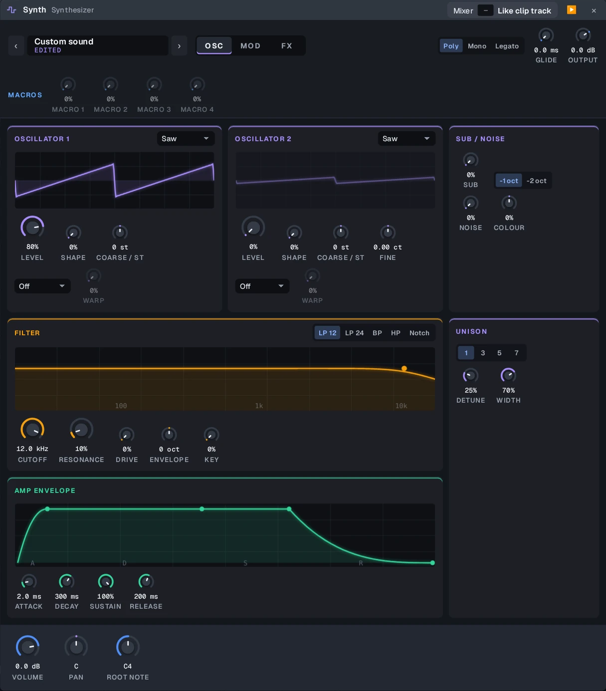

Sampler
In the Channel Rack, click + and choose a factory sample, an item under Project audio, or File from disk…. Click the channel name to open its controls. Right-click a key on the sampler’s keyboard to set the Root note, the key that plays the recording at its original pitch with PITCH and FINE at zero.
- Pitch and speed. Play a long voice sample at its root, then an octave above and below. Up an octave plays at twice the speed, so the word gets shorter. Down an octave plays at half speed, so it lasts twice as long. For a recording with a definite pitch, set its root to the note you hear.
- Trim and reverse. In Sample, drag the waveform’s start marker right past a drum’s initial strike. Listen for how much softer the same hit sounds. Reverse plays the selection backwards. FADE IN and FADE OUT soften its edges on every trigger.
- One-shot or gated. Trigger a long sample with two Piano Roll notes of different lengths. With Envelope off, both play through. Switch it on, keep Sustain at 100% and use a short Release. The short note now cuts off earlier. Use Attack for a swell, or lower Sustain so Decay can shape a pluck.
- Choke hi-hats. Set an open hat and a closed hat to the same Cut group, then sequence the closed hit right after the open one. The closed hit stops the open hat’s tail.
- Chop a loop. Open Slice and pick Transients for attacks or Equal for evenly spaced cuts. The root key plays slice 1 and each semitone up plays the next slice. Raise Sensitivity to catch quieter hits. Click a slice to preview it and drag its marker to tighten the cut. Dump to pattern writes the slices in their original order and timing. Move notes in the Piano Roll to rearrange the loop.
Synthesizer
Choose a preset from a Synthesizer category in the Channel Rack’s + menu, or select Empty synth to build a sound. Click a preset name in the channel window to browse the bank. Try 808 Deep on a low single note, Pluck Glass on separated notes and Pad Warm on a held chord. Turn the named Macros in each preset to hear the changes its designer mapped.
Build a pluck from a saw
- Start with Empty synth on OSC. Play the same note with Oscillator 1 set to Sine, then Saw. The sine has a smooth, pure pitch. The saw adds upper harmonics and sounds buzzy.
- Keep Saw, choose LP 24 in Filter and bring Cutoff down toward 800 Hz. Hear the buzz recede as the low-pass filter removes high frequencies. Add a little Resonance to accent the frequencies around the cutoff.
- In Amp envelope, set Attack short, Decay around 200 ms, Sustain to 0% and Release around 100 ms. Hold the key and hear the sound decay into silence. Raise Sustain to keep a quiet body under the strike.
Add width and motion
- Try Unison at 3 with a little Detune and Width. Each note now stacks slightly different pitches across the stereo image. Try Formant in Oscillator 1 and sweep Position for vowel-like changes at the same pitch.
- To make a held note pulse, open MOD and route LFO 1 to Cutoff in Modulation (source → target). Drag the amount right and try a sine shape with 1/4 sync. Raise Sustain on OSC so you can hear the brightness cycle. For a single bright strike that darkens, use Mod envelope with a short attack and a few hundred milliseconds of decay as the source.
- On FX, add Delay to repeat a short note or Reverb to give it a diffuse tail. The top voice selector switches between chord playing in Poly and single-note playing in Mono or Legato. Try overlapping notes in Legato with Glide raised to hear pitch slide in a bass phrase.


Synkopa Instruments
Choose Synkopa Instruments — pianos, strings, guitars from + in the Channel Rack. The player opens on Grand Piano, which ships with the app. Click Instruments to browse the other recordings and Download on a card when it needs its kit. Click a card to try it on the keyboard and double-click to return to the controls.
These instruments can use different recordings across pitches, playing strengths and articulations. Some use round robins, alternating recordings of the same note so repeated hits vary. Lower Dynamics to even out how loud soft and hard notes play while retaining their differences in tone.
Tone darkens or brightens the recordings. Attack softens the note’s entrance and Release controls the fade after you let go. Double-click Release for Auto to restore the mapped release times. Width adjusts stereo recordings, Tune matches fine pitch, and Noise controls recorded release sounds where available.

Grand Piano
A sampled Yamaha C5 with four velocity layers and key-release sounds. Play C4 at velocities 35 and 110. Listen for the harder strike’s extra brightness, then repeat a detached phrase with Noise at 100% and at zero to isolate the subtle damper sounds.
Upright Piano
A close, woody piano with three velocity layers and two round robins. Repeat one midrange note as eighth notes at a fixed velocity. Listen for changes between strikes. Try the same passage on Grand Piano to compare the attacks and tails.
Wurlitzer EP200
A reed electric piano that goes from soft to raspy as you play harder. Alternate gentle and accented strikes on the same midrange chord. Keep Tone centered to hear the reed bark, then turn it down to sit behind a vocal.
Electric Grand CP80
A stringed electric grand with a bright, glassy attack. Play open chord voicings in the middle register and compare with Wurlitzer EP200. Drop Tone while repeating the chords and listen for the edge to soften.
Pianet T
A plucked-reed electric piano with a soft, short sound. Play a sparse verse figure and then hold a chord. Listen for the way it naturally recedes while you hold the keys. Keep Attack near zero to retain the little pluck at the front.
String Section
Layered violins, violas and cellos for ensemble parts. Loop short chords and try Sustain for a held bow, Tremolo for repeated bow strokes, Pizzicato for a plucked accent and Spiccato for short, bounced strokes. In Auto, sequenced notes shorter than about 130 ms use Spiccato. Longer and live notes use Sustain.
Solo Violin
A single violin with an audible bow and vibrato. Alternate long and short notes in a melody. Compare Arco (bowed), Spiccato (bounced bow), Pizzicato (plucked) and Tremolo (rapid bow strokes) on that same phrase. For either string instrument, insert the tinted keyswitch notes before a phrase to change articulation during playback.
Concert Harp
A plucked harp with a ringing tail. Spread a chord into an ascending arpeggio, using very short notes. The strings still ring together after the notes end. Space the notes farther apart to hear each pluck and its tail.
Hollow Body Guitar
A clean Gretsch hollow body for rhythm parts and picked lines. Try a C chord voiced C3, E3, G3, C4 and E4. Stagger the starts low to high by a few milliseconds per note and compare with the same notes played together. The player assigns notes to six strings and damps the previous note when a string is reused.
Jazz Club Guitar
A warm Höfner archtop for chord comping and mellow melodies. Loop a short offbeat chord and alternate Sustain and Staccato to hear the difference in articulation. On both guitars, Auto uses Staccato for sequenced notes shorter than about 150 ms and Sustain for longer or live notes.
Vibraphone
Soft mallet strikes with a ringing metallic tail, recorded with the motor off. Play a soft note followed by a hard note at the same pitch and listen to the mallet attack. Hold a chord, let go, and compare a short Release with Auto to control how much the tails overlap.
Music Box
Choose Music Box — modeled tines from Sampled instruments in the picker. It models the pluck of a steel tine, the pin’s tick and the wooden box’s resonance. Play a soft note, then an accented one. Listen for the hard pluck’s metallic overtones fading before the main pitch.
- Mechanical brings up the pin’s tick. Compare zero and a high setting over a repeated high note. Raise Brightness to hear more of the metallic tine, and Body to bring out the wood under it.
- Hold a low note and compare Ring at 25% and 200%. The longer setting lets the tine decay more slowly while held. Shorten Release if you want it to fade quickly after the key comes up. Raise Spread on a phrase that jumps between low and high notes to place them farther apart in stereo.